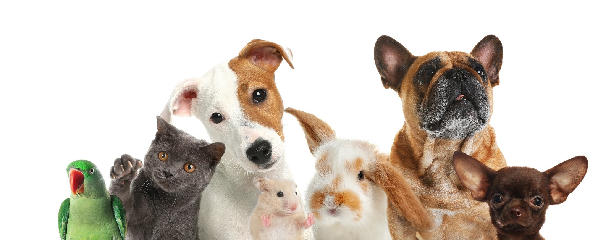

The Benefits of Dog Playdates: Fostering Canine Well-being
Dogs, known for their loyal and social nature, thrive in environments that allow them to interact with fellow furry companions. Dog playdates, organised gatherings where dogs can engage in social activities, offer a plethora of advantages for both the dogs and their owners. Here, we explore the benefits of incorporating regular playdates into your canine's routine.
- Socialisation: Dogs are inherently social animals, and playdates provide invaluable opportunities for them to refine their social skills. Regular interaction with other dogs helps reduce the risk of behavioural issues, fostering a well-rounded and sociable pet.
- Physical Exercise: Engaging in playful activities during dog playdates ensures that your furry friend gets the physical exercise essential for maintaining overall health. Regular exercise contributes to weight management and cardiovascular well-being.
- Mental Stimulation: Interacting with their canine counterparts during playdates stimulates dogs mentally. This mental enrichment is crucial for preventing boredom and promoting cognitive health.
- Behavioural Development: Dogs learn from each other, especially during play. Playdates can positively influence behaviour, teaching valuable lessons in sharing, communication, and problem-solving.
- Stress Reduction: Just as in humans, stress is a concern for dogs. Playdates offer a stress-free environment where dogs can relax, socialise, and engage in activities that contribute to lower anxiety levels.
- Bonding for Owners: Dog playdates not only benefit the dogs but also provide an opportunity for owners to connect, share experiences, and build a sense of community. The shared joy of watching furry friends play fosters camaraderie among dog owners.
- Observation of Play Styles: Owners can use playdates to observe their dog's play style and interactions. This insight helps identify any potential issues, preferences, or adjustments needed in the play environment.
- Energy Release: Energetic breeds, in particular, benefit from playdates as they offer a controlled space for releasing excess energy. This can reduce the likelihood of dogs exhibiting destructive behaviours at home.
- Improved Training Opportunities: Dog playdates provide a controlled setting for practising commands and training techniques amidst distractions, contributing to better obedience and responsiveness.
- Overall Happiness: Ultimately, positive interactions with fellow dogs contribute significantly to a dog's overall happiness and well-being. A happy dog is more likely to exhibit positive behaviours and live a fulfilling life.
Incorporating dog playdates into your dog's routine requires careful consideration, ensuring compatibility in terms of size, temperament, and play style among participating dogs. A well-organized and supervised playdate can be a delightful experience for both dogs and their owners, fostering a sense of community and contributing to the overall well-being of our beloved canine companions.
The Importance of Pet Annual Wellness Check-ups: Investing in Lifelong Health
Our furry companions bring boundless joy, loyalty, and companionship into our lives. As responsible pet owners, it is our duty to ensure their well-being by prioritising preventive care, and a crucial aspect of this care is the Annual Wellness Check-up. This routine examination serves as a cornerstone in maintaining your pet's health and happiness.
1. Early Detection of Health Issues
Annual Wellness Check-ups provide veterinarians with the opportunity to detect potential health issues early on. Just as regular doctor visits are vital for humans, routine check-ups for pets allow veterinarians to identify and address emerging health concerns before they escalate. Early detection often leads to more effective treatments and a higher chance of successful outcomes.
2. Vaccinations and Preventive Care
Regular vaccinations are a fundamental component of the Annual Wellness Check-up. These vaccinations protect pets from serious, and sometimes life-threatening, diseases. Additionally, preventive measures such as parasite control and dental check-ups contribute significantly to a pet's overall well-being.
3. Tailored Nutritional Guidance
Pets, like humans, have unique dietary needs at different stages of their lives. The Annual Wellness Check-up provides an opportunity for veterinarians to assess your pet's nutritional requirements and offer guidance on a diet that supports their health and vitality.
4. Dental Health Evaluation
Oral health is often overlooked, yet it plays a crucial role in a pet's overall health. During the check-up, veterinarians examine the condition of your pet's teeth and gums, addressing any signs of dental disease. Good oral hygiene can prevent a range of health issues and contribute to a longer, healthier life for your pet.
5. Holistic Well-being
Beyond addressing specific health concerns, Annual Wellness Check-ups contribute to the holistic well-being of your pet. A veterinarian's expertise can guide you in providing the best environment, exercise routine, and mental stimulation for your furry friend, ensuring their overall happiness and quality of life.
6. Building a Relationship with Your Veterinarian
Regular check-ups foster a strong relationship between your pet and their veterinarian. This familiarity is invaluable in times of illness or emergencies, as the trust built during routine visits can alleviate stress for both the pet and the owner.
7. Addressing Behavioural Changes
Pets, like humans, can experience changes in behaviour that may indicate underlying health issues. Annual Wellness Check-ups offer an opportunity to discuss any behavioural changes with your veterinarian, allowing for early intervention and tailored solutions.
Conclusion
In conclusion, investing in the Annual Wellness Check-up for your pet is an investment in their lifelong health and happiness. This proactive approach to pet care not only safeguards against potential health issues but also strengthens the bond between you and your beloved companion. Schedule your pet's Annual Wellness Check-up today and embark on a journey of comprehensive care that ensures a vibrant and fulfilling life for your furry family member.